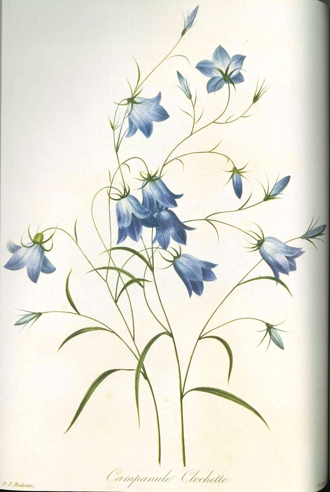

作品名 「美花選」
花言葉 「謙遜」「従順」「服従」
イトシャジン
「謙遜」
夏から秋にかけて、根ぎわのロゼット状の葉の間からしなやかに細い花茎を伸ばして、上部で枝分かれしたその先に、淡い青紫色や白い鐘型の小さな花が横向きに咲きます。花の名は、花茎が細長くしなやかで、淡青色のベル形の花が沙参（シャジン）の花に似ていることから名づけられました。
美花選
ピエール=ジョゼフ・ルドゥーテ
ピエール=ジョゼフ・ルドゥーテはフランス生まれの画家であり、花と植物を描いた絵画で知られています。彼は「花の女王」と呼ばれ、18世紀のフランスで最も優れた植物学的な絵画家です。彼は、当時の貴族や科学者の間で高く評価されています。「美花選」は花と植物の絵画集です。「美花選」は、細心の注意を払った詳細な描写、鮮やかな色彩、自然な描写といった特徴があり、どれもが本物と見まごうばかりの精緻さで描かれ、植物学的に正確に描かれているのが特徴で、現在も高く評価されています。また、「美花選」は、植物学、美術、花卉などの歴史的な重要性もあり、多くの博物館や図書館に収蔵されています。
| 作品名 | 美花選 |
| 作者 | ピエール=ジョゼフ・ルドゥーテ |
| 制作年 | 1827-1833年 |
| 所蔵 | エアランゲン・ニュンベルク大学図書館 |